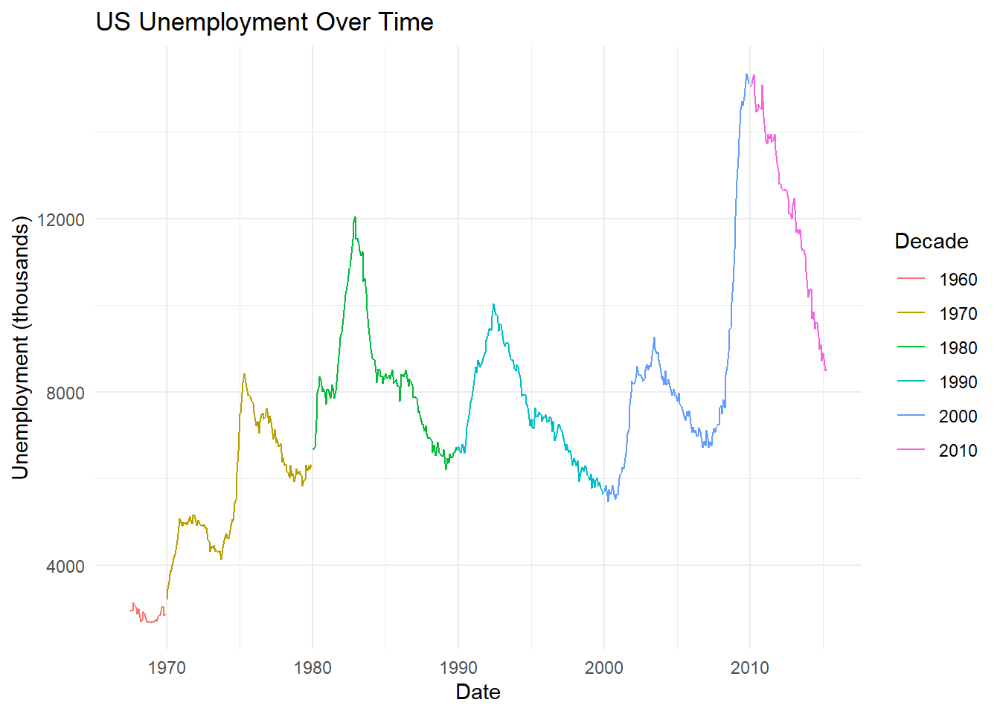
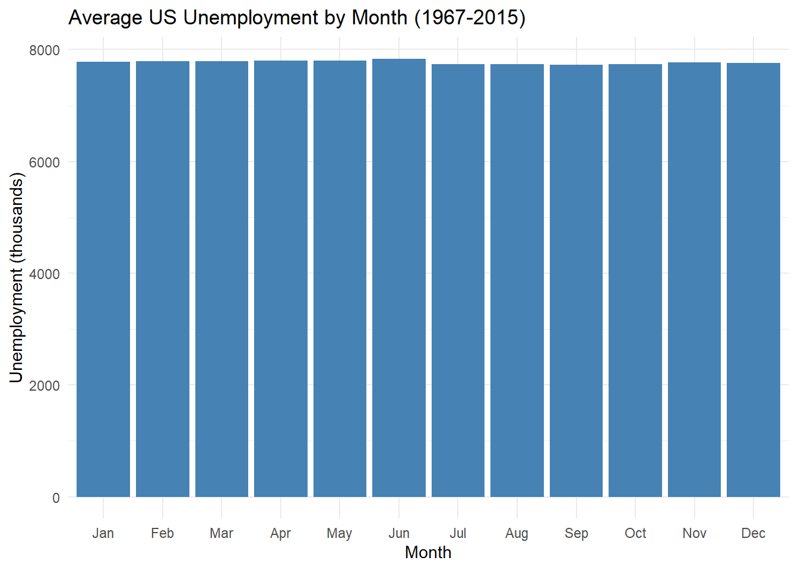
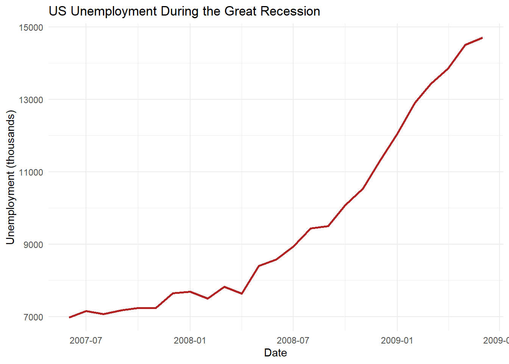

16 Working with Dates and Times
16.1 Dates Are Weird. Lubridate Makes Them Less Weird.
Dates look simple. Everyone knows what “January 15, 2025” means. But try to do math with dates and things get strange fast. Months have different numbers of days. Years sometimes have an extra day. And don’t even get me started on daylight saving time.
R has built-in tools for dates, but they require you to memorize format strings like "%m/%d/%Y" (and yes, the capital Y matters). The lubridate package takes a different approach: just tell it what order the year, month, and day appear in, and it figures out the rest.
One note: as of tidyverse 2.0 (released in 2023), lubridate IS loaded automatically with library(tidyverse). In older code or tutorials, you may see library(lubridate) as a separate line — that still works fine, it is just no longer necessary. This chapter’s setup chunk loads both to be explicit.
Let’s jump in.
16.2 Parsing Dates: ymd(), mdy(), dmy()
This is the single best thing about lubridate. Instead of memorizing format codes, you just pick the function that matches the order of your date components.
Year-Month-Day? Use ymd():
ymd("2025-06-15")
#> [1] "2025-06-15"
ymd("2025/06/15")
#> [1] "2025-06-15"
ymd("20250615")
#> [1] "2025-06-15"Month-Day-Year (the American way)? Use mdy():
mdy("06-15-2025")
#> [1] "2025-06-15"
mdy("June 15, 2025")
#> [1] "2025-06-15"
mdy("Jun 15 2025")
#> [1] "2025-06-15"Day-Month-Year (the rest-of-the-world way)? Use dmy():
dmy("15-06-2025")
#> [1] "2025-06-15"
dmy("15 June 2025")
#> [1] "2025-06-15"
dmy("15/06/2025")
#> [1] "2025-06-15"Notice that each function handles slashes, dashes, spaces, full month names, and abbreviations. You just tell it the order and lubridate does the rest. Compare that with base R’s as.Date("06/15/2025", format = "%m/%d/%Y") and you’ll never look back.
These functions are vectorized, so they work on entire columns:
16.3 Adding Time: ymd_hms() and Friends
Need date AND time? Just add _hms (hours, minutes, seconds) to the function name:
ymd_hms("2025-06-15 14:30:45")
#> [1] "2025-06-15 14:30:45 UTC"
mdy_hm("June 15, 2025 2:30 PM")
#> [1] "2025-06-15 14:30:00 UTC"You can also specify a time zone:
ymd_hms("2025-06-15 14:30:45", tz = "America/New_York")
#> [1] "2025-06-15 14:30:45 EDT"16.4 Building Dates from Separate Columns
Sometimes your data has year, month, and day in separate columns (looking at you, Excel exports). make_date() puts them together:
event_data <- tibble(
event = c("Conference", "Workshop", "Seminar", "Retreat"),
yr = c(2025, 2025, 2025, 2026),
mo = c(3, 6, 9, 1),
dy = c(10, 22, 5, 15)
)
event_data %>%
mutate(event_date = make_date(yr, mo, dy))
#> # A tibble: 4 × 5
#> event yr mo dy event_date
#> <chr> <dbl> <dbl> <dbl> <date>
#> 1 Conference 2025 3 10 2025-03-10
#> 2 Workshop 2025 6 22 2025-06-22
#> 3 Seminar 2025 9 5 2025-09-05
#> 4 Retreat 2026 1 15 2026-01-1516.5 Today and Now
Need the current date or time? Easy:
These are surprisingly useful for things like calculating how many days until a deadline or filtering data to “last 30 days.”
16.6 Extracting Components: Year, Month, Day, etc.
Once you have a proper date object, you can pull it apart into pieces. This is where dates become really useful for business analysis — think “sales by month” or “orders by day of week.”
dt <- ymd_hms("2025-06-15 14:30:45")
year(dt)
#> [1] 2025
month(dt)
#> [1] 6
mday(dt) # day of the month
#> [1] 15
wday(dt) # day of the week (1 = Sunday by default)
#> [1] 1
hour(dt)
#> [1] 14
quarter(dt)
#> [1] 2Want month names instead of numbers? Set label = TRUE:
month(dt, label = TRUE)
#> [1] Jun
#> 12 Levels: Jan < Feb < Mar < Apr < May < Jun < Jul < Aug < Sep < ... < Dec
month(dt, label = TRUE, abbr = FALSE)
#> [1] June
#> 12 Levels: January < February < March < April < May < June < ... < DecemberSame for day of the week:
wday(dt, label = TRUE)
#> [1] Sun
#> Levels: Sun < Mon < Tue < Wed < Thu < Fri < Sat
wday(dt, label = TRUE, abbr = FALSE)
#> [1] Sunday
#> 7 Levels: Sunday < Monday < Tuesday < Wednesday < Thursday < ... < SaturdayHere’s how this looks in a real workflow — breaking a transaction date into analysis-friendly components:
sales_data <- tibble(
transaction_date = ymd_hms(c(
"2025-01-10 09:15:00", "2025-02-14 11:30:00",
"2025-03-22 16:45:00", "2025-04-01 08:00:00",
"2025-05-18 13:20:00", "2025-06-30 17:55:00"
)),
amount = c(150, 280, 95, 420, 175, 310)
)
sales_data %>%
mutate(
sale_month = month(transaction_date, label = TRUE),
sale_day = wday(transaction_date, label = TRUE),
sale_quarter = quarter(transaction_date)
)
#> # A tibble: 6 × 5
#> transaction_date amount sale_month sale_day sale_quarter
#> <dttm> <dbl> <ord> <ord> <int>
#> 1 2025-01-10 09:15:00 150 Jan Fri 1
#> 2 2025-02-14 11:30:00 280 Feb Fri 1
#> 3 2025-03-22 16:45:00 95 Mar Sat 1
#> 4 2025-04-01 08:00:00 420 Apr Tue 2
#> 5 2025-05-18 13:20:00 175 May Sun 2
#> 6 2025-06-30 17:55:00 310 Jun Mon 2Now you can group by month, day of week, or quarter. That’s how you answer questions like “Do we sell more on weekdays or weekends?” or “Which quarter had the highest revenue?”
16.7 Date Math: Adding and Subtracting Time
This is one of the best parts. You can just add time to dates. Lubridate gives you two ways to think about it:
Durations — exact amounts of time measured in seconds:
ymd("2025-01-01") + ddays(30)
#> [1] "2025-01-31"
ymd("2025-01-01") + dweeks(2)
#> [1] "2025-01-15"
ymd_hms("2025-06-15 10:00:00") + dhours(3)
#> [1] "2025-06-15 13:00:00 UTC"Periods — calendar-aware amounts (respects different month lengths):
ymd("2025-01-01") + months(6)
#> [1] "2025-07-01"
ymd("2025-01-31") + months(1) # February doesn't have 31 days, so you get NA
#> [1] NA
ymd("2025-03-15") + years(2) + months(3) + days(10)
#> [1] "2027-06-25"When to use which? Use durations when you need an exact elapsed time (“How many seconds did this process take?”). Use periods when you need calendar math (“What’s the date 3 months from now?”). For most business analysis, periods are what you want.
You can also just subtract dates to get the difference:
as.numeric(ymd("2025-12-31") - ymd("2025-01-01"))
#> [1] 364That’s the number of days between two dates. Simple.
16.8 Intervals: Did This Event Happen During This Period?
An interval is just a span of time with a start and end. The main use case is checking whether a date falls within a range.
spring_semester <- ymd("2025-01-13") %--% ymd("2025-05-09")
ymd("2025-03-15") %within% spring_semester
#> [1] TRUE
ymd("2025-06-01") %within% spring_semester
#> [1] FALSEUseful for questions like “Did this sale happen during our Q2 promotion?” or “Was this employee hired during the pandemic?”
16.9 Rounding Dates: Grouping by Time Period
floor_date() rounds a date down to the nearest unit. This is incredibly useful for aggregating data — turning daily transactions into monthly summaries, for example.
transactions <- tibble(
date = ymd(c(
"2025-01-05", "2025-01-18", "2025-01-29",
"2025-02-03", "2025-02-14", "2025-02-27",
"2025-03-08", "2025-03-15", "2025-03-30"
)),
revenue = c(1200, 950, 1100, 1350, 800, 1500, 1050, 1200, 900)
)
transactions %>%
mutate(month = floor_date(date, unit = "month")) %>%
group_by(month) %>%
summarize(
total_revenue = sum(revenue),
n_transactions = n()
)
#> # A tibble: 3 × 3
#> month total_revenue n_transactions
#> <date> <dbl> <int>
#> 1 2025-01-01 3250 3
#> 2 2025-02-01 3650 3
#> 3 2025-03-01 3150 3The output shows three rows — one per month — with total revenue and transaction count. January had the highest total revenue ($3,250 from 3 transactions), while February had the highest single-transaction count of 3 as well but a different total. This floor_date() + group_by() pattern is incredibly common in business reporting — it turns granular daily data into the monthly summaries that dashboards and management reports are built on.
You can also round to weeks, quarters, or even custom intervals like “15 minutes” or “6 hours” if you’re working with high-frequency data.
16.10 Time Zones: The One Paragraph Version
Time zones are complicated, but here’s what you need to know. with_tz() converts a time for display (“What time is this New York meeting in Tokyo?”) without changing the actual moment. force_tz() corrects a mislabeled time zone (“This was recorded as UTC but it was actually Eastern”). If you’re working with data from a single time zone, you probably don’t need either of these.
16.11 Practical Example: Analyzing Economic Trends
Let’s use lubridate with the built-in economics dataset to do some real analysis. This dataset has monthly US economic data from 1967 to 2015.
economics %>%
mutate(decade = factor(10 * (year(date) %/% 10))) %>%
ggplot(aes(x = date, y = unemploy, color = decade)) +
geom_line() +
labs(
title = "US Unemployment Over Time",
x = "Date", y = "Unemployment (thousands)", color = "Decade"
) +
theme_minimal()
The color-coded decades immediately reveal the cyclical nature of unemployment. Each decade has its own recession spike, and the overall level trends upward over time as the labor force grew. The 2000s (pink) show the most dramatic rise, corresponding to the Great Recession. This is the payoff of year() — extracting a date component lets you group and color data in ways that reveal long-term patterns.
economics %>%
mutate(month = month(date, label = TRUE)) %>%
group_by(month) %>%
summarize(avg_unemploy = mean(unemploy)) %>%
ggplot(aes(x = month, y = avg_unemploy)) +
geom_col(fill = "steelblue") +
labs(
title = "Average US Unemployment by Month (1967-2015)",
x = "Month", y = "Unemployment (thousands)"
) +
theme_minimal()
The monthly averages are remarkably flat — unemployment does not have a strong seasonal pattern when averaged over nearly 50 years. The slight variations you see are dwarfed by the cyclical (recession-driven) swings. This is a useful finding in itself: it tells you that month-to-month comparisons of unemployment are meaningful, unlike retail sales which have massive seasonal swings.
# Filter to the Great Recession and plot
economics %>%
filter(between(date, ymd("2007-06-01"), ymd("2009-06-01"))) %>%
ggplot(aes(x = date, y = unemploy)) +
geom_line(color = "firebrick", linewidth = 1) +
labs(
title = "US Unemployment During the Great Recession",
x = "Date", y = "Unemployment (thousands)"
) +
theme_minimal()
The Great Recession chart shows unemployment nearly doubling in just two years — from about 7 million to over 14 million. The between() function combined with ymd() made it trivial to zoom into this specific date range. This pattern — filter to a date window, then plot — is exactly how you would build a “drill-down” view in a business dashboard.
See how year(), month(), between(), and ymd() all work together seamlessly with dplyr and ggplot2? That’s the whole point.
16.12 Quick Reference
| What you want to do | Function |
|---|---|
| Parse a date string |
ymd(), mdy(), dmy() (match the order) |
| Parse date + time |
ymd_hms(), mdy_hm(), etc. |
| Build from components |
make_date(), make_datetime()
|
| Current date/time |
today(), now()
|
| Extract year, month, etc. |
year(), month(), mday(), wday(), quarter()
|
| Add calendar time |
+ months(), + years(), + days()
|
| Add exact time |
+ dhours(), + ddays(), + dweeks()
|
| Round to period |
floor_date(), ceiling_date(), round_date()
|
| Check if date is in range |
%within% with intervals (%--%) |
Dates are weird in every language. But with lubridate, they’re manageable. Parse them, extract what you need, do the math, and get on with your analysis.